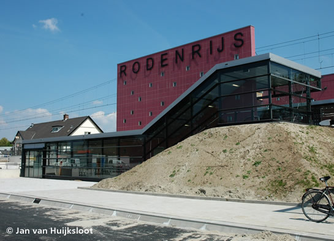

Nieuw station Rodenrijs geopend en meer...
- zondag 30 november 2008 21:54
- Geschreven door Joachim
Op maandagmorgen 5 mei werd vanaf aanvang dienst het nieuwe station Rodenrijs aangedaan door de metrorijtuigen van de RandstadRail Erasmuslijn. Het station, dat iets zuidelijker gelegen is dan het voormalige en tijdelijke station, oogt modern en lijkt op het reeds gerealiseerde station Melanchthonweg. Het station werd in orde gemaakt tussen 26 april en 4 mei, waarbij diverse onderdelen van de infrastructuur verplaatst moesten worden.
 Foto's met dank aan Robert van der Burg en Jan van Huijksloot.
Foto's met dank aan Robert van der Burg en Jan van Huijksloot.
Het afwerken van de restpunten aan het nieuwe station Rodenrijs.
Ondermeer sein R2 350 werd verplaatst.
De nieuwe plaats van het sein, iets zuidelijker.
Met op de achtergrond het oude station Rodenrijs, wordt een sein bevestigd aan de zijde van spoor 1, kijkend richting Den Haag.

De gevel van het station oogt transparant, klassiek en toch modern.
Wagendienst 701, met onder andere rijtuig 5266 (op kop), halteert op het nieuwe station Rodenrijs.
AED op 17 metrostations
Vanmorgen werd een van de eerste zeventien Automatische Externe Defibrillatoren (AED) geplaatst in de zuidhal van metrostation Beurs door RET-directeur Ad van Bavel, directeur Hans Stam van de Nederlandse Hartstichting en Haddo Meijer van de Stichting Kloppend Hart. Tegelijkertijd werd een bijbehorende reizigerscampagne gestart. Met behulp van posters worden reizigers geïnstrueerd wat te doen wanneer een medereiziger een hartstilstand krijgt. Inmiddels zijn een groot aantal metrobeheerders opgeleid om met de AED om te gaan, hoewel een AED ook zonder cursus gebruikt kan worden. Het is de bedoeling om in de komende tijd meer stations te voorzien van een AED.
Samen met een metrobeheerder plaatst directeur Hans Stam (Nederlandse Hartstichting) een van de eerste zeventien AED's in de daarvoor bestemde kast, naast de SOS-zuil.
Eveneens werd de aftrap gegeven voor een nieuwe reizigerscampagne.
5501
Rijtuig 5501 werd gisteren overgebracht van de lijnwerkplaats Waalhaven naar de remise 's-Gravenweg. Als trekkracht fungeerden drie Bombardier-rijtuigen uit de serie 5300. Het metrostel werd geparkeerd op spoor 323. De komende periode zal het metrorijtuig getest en beproefd worden. Het is nog niet bekend wanneer het volgende nieuwe metrorijtuig arriveert in Rotterdam.
 Onderstaande foto met dank aan Michael van Heyningen.
Onderstaande foto met dank aan Michael van Heyningen.
Op een deel van het oudste metrotraject van Rotterdam, ter hoogte van de Parallelweg, rolt het nieuwste metrorijtuig van Rotterdam voorbij.
Rijtuig 5501 op spoor 323 van de remise 's-Gravenweg.
Net nadat rijtuig 5501 afgeleverd werd op de lijnwerkplaats Waalhaven, vorige week dinsdag, bleek dat het rijtuig verkeerd om stond. Hiertoe is de nieuwe aanwinst de volgende dag alsnog "gedriehoekt" met behulp van een Railion-locomotief met bijbehorende koppel- en schutwagens, waarbij het traject Rotterdam Waalhaven - Kijfhoek - Rotterdam Lombardijen - Rotterdam Waalhaven afgelegd werd.
Voor vertrek staat het metrorijtuig gereed op het werkemplacement Waalhaven.
De metrobaan wordt gepasseerd via het spoor van ProRail.
Vervolgens wordt ook emplacement Waalhaven gepasseerd.
Werkzaamheden emplacement Waalhaven
Sinds 29 april zijn de sporen 121 t/m 124 weer bereikbaar vanaf zowel de oost- als de westzijde. De overige opstelsporen zijn momenteel alleen nog vanaf de westzijde bereikbaar. Ook het uitrukken van drie wagendiensten vanaf de opstelsporen ten zuiden van station Slinge is met de ingebruikname van bovengenoemde sporen verleden tijd.